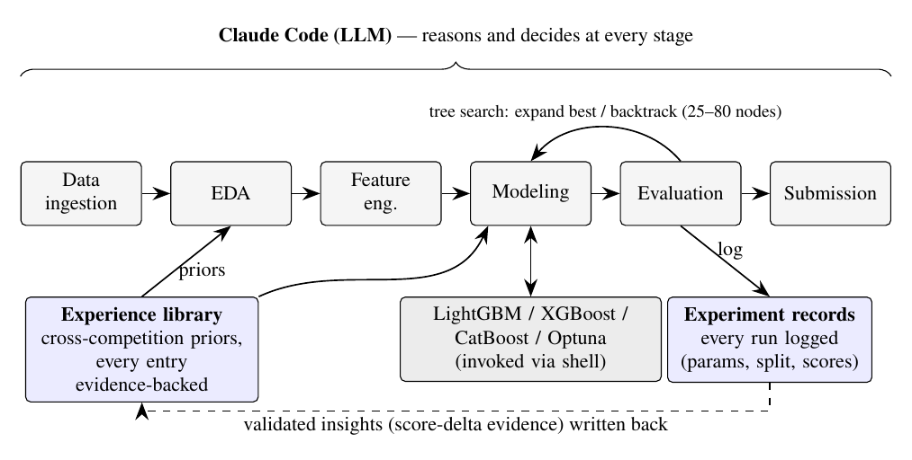
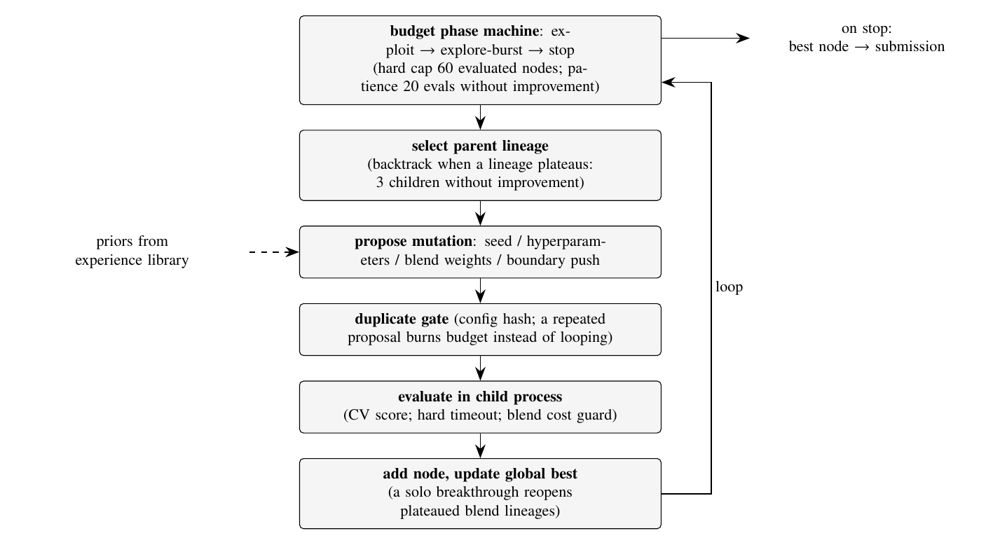
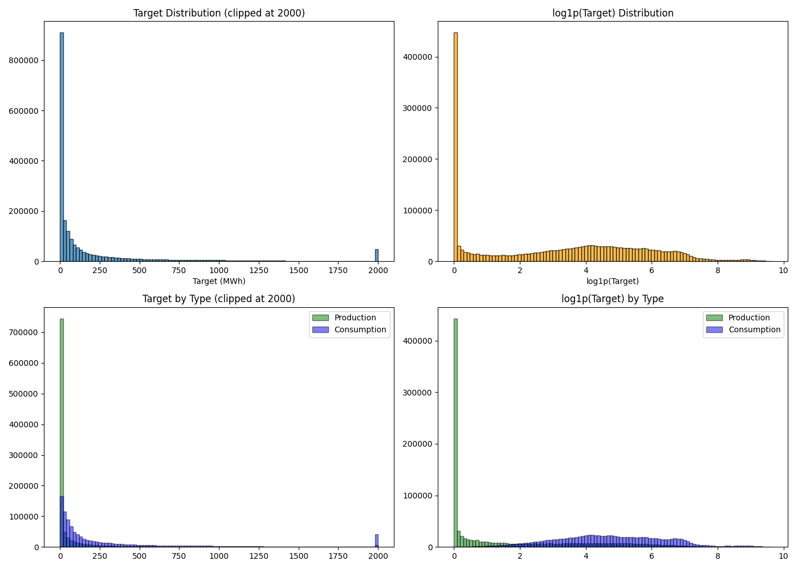
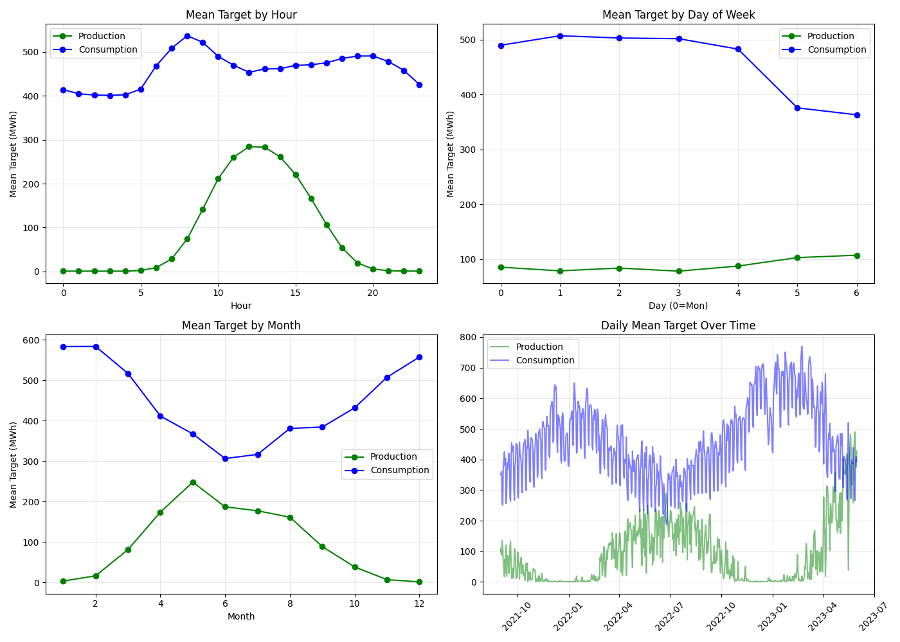

An LLM reasons at every stage; Auto-ML libraries are invoked through the shell; a cross-competition experience library supplies evidence-backed priors; a tree search over candidate configurations is the optimisation loop.


All submissions scored on the real leaderboard (late submission); verdicts adjudicated by a paired test built from Kaggle's own public/private split.
All 20 competitions run under the frozen Stage-0.5 architecture in credential-free sandboxes — submissions exist, leaderboard scoring is a separate credentialed step. Every verdict is then adjudicated by a paired test built from Kaggle's own public/private split.
The dossier layer's external-data injection turns the architecture's canonical failure into a numerical first among the three agents — and all 6 of 6 controlled external-data arms beat their matched baselines. Bar length ∝ margin over 52 (lower SMAPE is better).
| Competition | Metric | my-agent | NVIDIA | AIDE |
|---|---|---|---|---|
| us-patent (NLP) | Pearson r ↑ | 0.86658 | 0.86160 | 0.65821 |
| ventilator (time series) | MAE ↓ | 0.16525 | 0.40093 | 0.34591 |
| SIIM-ISIC (imaging) | AUC ↑ | 0.93529 | 0.89822 | 0.88579 |
All 20 competitions re-run under one frozen architecture, credential-free sandboxes, per-lane transcript audit. 16/20 lanes run (one pending audit review), 1 running, 3 queued — leaderboard scores TBD until the operator scoring step.


Companion documents: Report v4 (Overleaf), Engineering Log, Case Studies, 22 per-competition ML-spec reports.